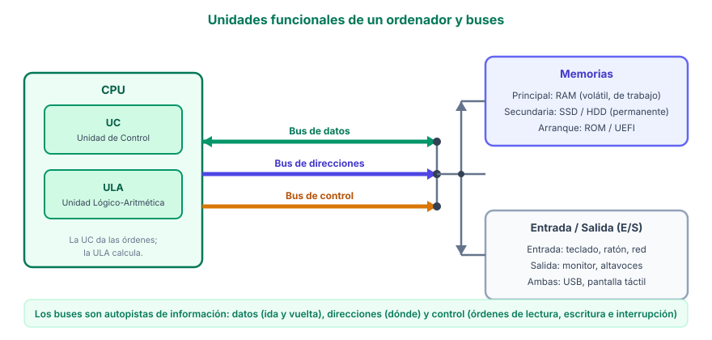

Componentes de un ordenador
Introducción
Un ordenador es un sistema compuesto por múltiples elementos hardware y software que trabajan conjuntamente. En esta sesión identificaremos y describiremos cada componente, comprendiendo su función y su relación con el resto del sistema.
¿Cómo funciona un PC y que hace cada pieza? · Nate Gentile
Las unidades funcionales de un ordenador
Antes de mirar las piezas de placa, conviene ver la lógica del ordenador: trabaja como un equipo formado por varias unidades funcionales, cada una especializada en una tarea y conectada con las demás. Son estas:
UC — Unidad de Control
La «jefa» del ordenador: lee las instrucciones del programa desde la memoria, las descifra y da las órdenes al resto de unidades. Sin la UC, nadie sabe qué tiene que hacer.
ULA — Unidad Lógico-Aritmética
La «calculadora»: realiza todas las operaciones aritméticas (sumas, restas, multiplicaciones) y lógicas (comparar: ¿es mayor?, ¿es igual?).
Memorias
Guardan datos e instrucciones: la memoria principal (RAM) mientras trabajamos, la memoria secundaria (SSD o HDD) de forma permanente y una pequeña memoria de arranque (ROM/UEFI).
Unidades de entrada y salida (E/S)
El puente con el exterior: la entrada (teclado, ratón, tarjeta de red) envía datos al ordenador, y la salida (monitor, altavoces) muestra los resultados.
La UC y la ULA juntas forman lo que llamamos procesador o CPU. Así se entiende mejor la frase «el procesador es el cerebro del ordenador»: la UC da las órdenes y la ULA hace los cálculos.

Cómo se comunican: los buses
Las unidades no hablan entre sí de cualquier manera: usan buses, que son conjuntos de caminos electrónicos paralelos por los que circula la información, como una autopista con varios carriles. Hay tres:
- Bus de datos: por aquí viajan los datos y valores (el resultado de una suma, la letra que has escrito). Es bidireccional: va de la CPU a la memoria y vuelve.
- Bus de direcciones: la UC indica en él qué dirección de memoria o qué dispositivo quiere leer o escribir (como el número de una casa). Va de la CPU hacia la memoria o los periféricos.
- Bus de control: circulan las órdenes de sincronización: leer, escribir, interrupciones… para que todas las unidades sepan cuándo actuar.
Ejemplo del día a día: cuando escribes una letra, el teclado (E/S) envía el dato; la UC lo recibe, la ULA puede procesarlo y se guarda en la RAM. Al guardar el archivo, los datos viajan por los buses hasta el disco.
Las ranuras y puertos de un PC son buses reales: PCIe (tarjetas gráficas y SSD NVMe), SATA (discos) y USB (periféricos). Cuanto más anchos y rápidos son los buses, mejor se comunica el ordenador: por eso un SSD NVMe es muchísimo más rápido que un disco duro antiguo.
Comprueba lo aprendido
¿Cuál es la función del bus de direcciones?
Componentes principales
Las unidades funcionales se materializan en piezas físicas. Todo ordenador se compone de los siguientes elementos fundamentales:
CPU (Unidad Central de Procesamiento)
El "cerebro" del ordenador. Ejecuta las instrucciones de los programas realizando operaciones lógicas, aritméticas y de control. Se mide en gigahercios (GHz) y su rendimiento depende del número de núcleos y la velocidad de reloj.
RAM (Memoria de Acceso Aleatorio)
Memoria temporal de alta velocidad donde se almacenan los datos que el procesador está utilizando en ese momento. Se mide en gigabytes (GB). Al apagar el ordenador, su contenido se pierde.
Placa base
Circuit impreso que conecta todos los componentes del ordenador. Sobre ella se insertan el procesador, la memoria RAM, las tarjetas de expansión y se conectan los dispositivos de almacenamiento y periféricos.
Almacenamiento
Dispositivos donde se guardan los datos de forma permanente: discos duros (HDD), unidades de estado sólido (SSD) y unidades NVMe. Se mide en gigabytes (GB) o terabytes (TB).
Fuente de alimentación
Convierte la corriente alterna de la red eléctrica (220V) en corriente continua de bajo voltaje (12V, 5V, 3,3V) que necesitan los componentes internos. Se mide en vatios (W).
Periféricos
Dispositivos que permiten la interacción con el ordenador. Entrada: teclado, ratón, escáner. Salida: monitor, altavoces, impresora. Entrada/Salida: pantalla táctil, memoria USB.
Actividad: Identificación de componentes
Con las imágenes y la información de esta sesión, completar una tabla con los siguientes datos de cada componente:
- Nombre del componente y su función principal.
- Unidad de medida y ejemplo de especificación.
- Conexión a la placa base (tipo de ranura o puerto).
- ¿Qué componente se vería afectado si falla este?
- Dibuja el esquema de las unidades funcionales (UC, ULA, memorias y E/S) y etiqueta los tres buses, señalando con flechas la dirección de cada uno.


.jpg){kind=link}